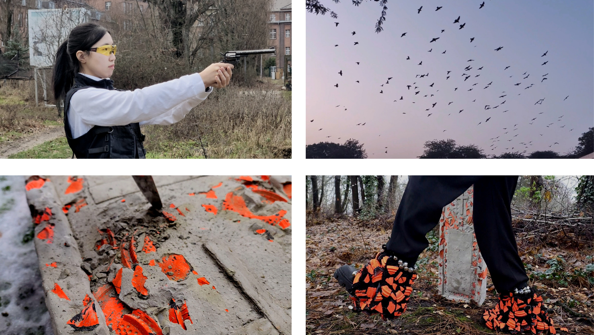

Bae-baeng-i-gut (배뱅이굿)
2024
single channel video, sound
00:02:37
2024
single channel video, sound
00:02:37
Bae-baeng-i-gut (배뱅이굿) is a video performance inspired by the Korean traditional performing art of the same name. In the original story, a "Gut" (Korean shamanic ritual) is performed to console the spirit of a pigeon that dies in a dream, bringing peace to both the dead and the living. This work reinterprets this narrative through the lens of contemporary human–nonhuman relations.
The central material of the work is the clay pigeon, the target used in clay target shooting. Its name originates from the historical practice of using live pigeons for target shooting, carrying the traces of a long history of objectifying and sacrificing the natural world. By connecting the "dead pigeon" of the traditional narrative with the modern clay pigeon, the work suggests that although times have changed, the sacrifice of nature continues in different forms.
The video begins with the artist aiming a gun at a clay pigeon. As the gunshot rings out, a flock of birds suddenly takes flight into the sky. This is followed by the repeated act of striking a cement gravestone embedded with fragments of shattered clay pigeons using a knife. In the final scene, the artist dances in front of the grave with bells and broken clay pigeon fragments tied to their feet.
In this work, shamanism is not treated as an object of religious belief, but as a means of connecting humans and nature, the past and the present, and the visible and the invisible. The performance becomes a ritual of mourning for the violence inflicted upon the natural world, while the body becomes a medium through which absent beings and forgotten temporalities are brought into the present.
Bae-baeng-i-gut (배뱅이굿)은 한국의 전통 공연예술인 '배뱅이굿'을 재해석한 비디오 퍼포먼스 작업이다. 배뱅이굿은 꿈속에서 죽은 비둘기의 영혼을 위로하기 위해 굿을 벌이는 서사를 담고있으며, 이를 통해 망자와 산 자 모두의 평안을 기원한다. 이 작품은 이러한 서사를 동시대의 인간-비인간 관계라는 관점에서 새롭게 해석한다.
작품의 주요 재료인 클레이 피전은 클레이 사격에 사용되는 표적을 의미한다. 과거 실제 비둘기를 사냥의 표적으로 사용했던 역사에서 유래한 이름으로, 인간이 자연을 대상화하고 희생시켜 온 폭력의 흔적을 담고 있다. 작품은 전통 서사 속 '죽은 비둘기'와 현대의 '클레이 피전'을 연결하며, 시대는 달라졌지만 자연을 희생시키는 방식은 다른 형태로 계속되고 있음을 드러낸다.
영상은 클레이 피전을 향해 총을 겨누는 장면으로 시작된다. 총성이 울리는 순간 새 떼가 하늘로 날아오르고, 이어 깨진 클레이 피전 조각이 박혀 있는 시멘트 묘비를 칼로 반복해서 내리치는 행위가 이어진다. 마지막으로 작가는 발에 방울과 클레이 피전 조각을 매단 채 무덤 앞에서 춤을 춘다.
이 작품에서 무속은 종교적 믿음의 대상이 아니라 인간과 자연, 과거와 현재, 보이는 것과 보이지 않는 세계를 연결하는 방식으로 작동한다. 퍼포먼스는 인간에 의해 희생된 자연을 애도하는 의례가 되며, 몸은 사라진 존재와 잊힌 시간성을 현재로 불러오는 매개가 된다.
